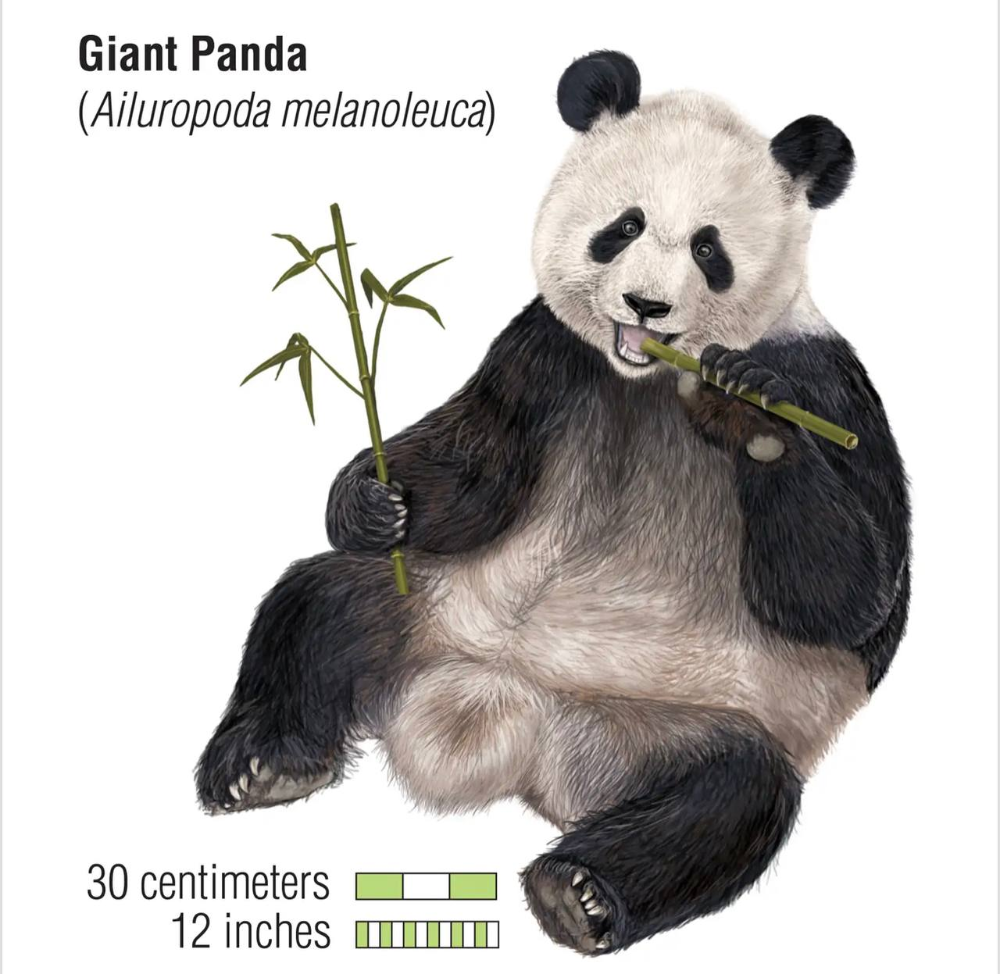
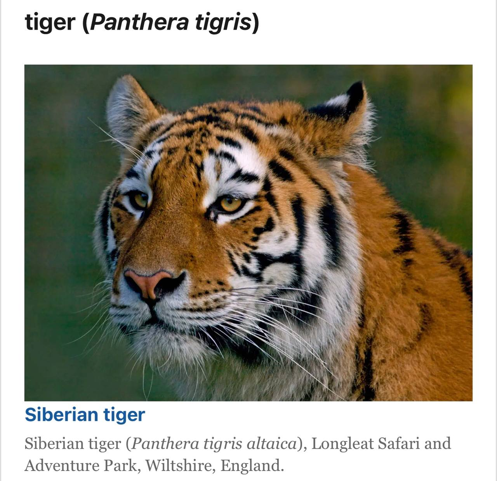
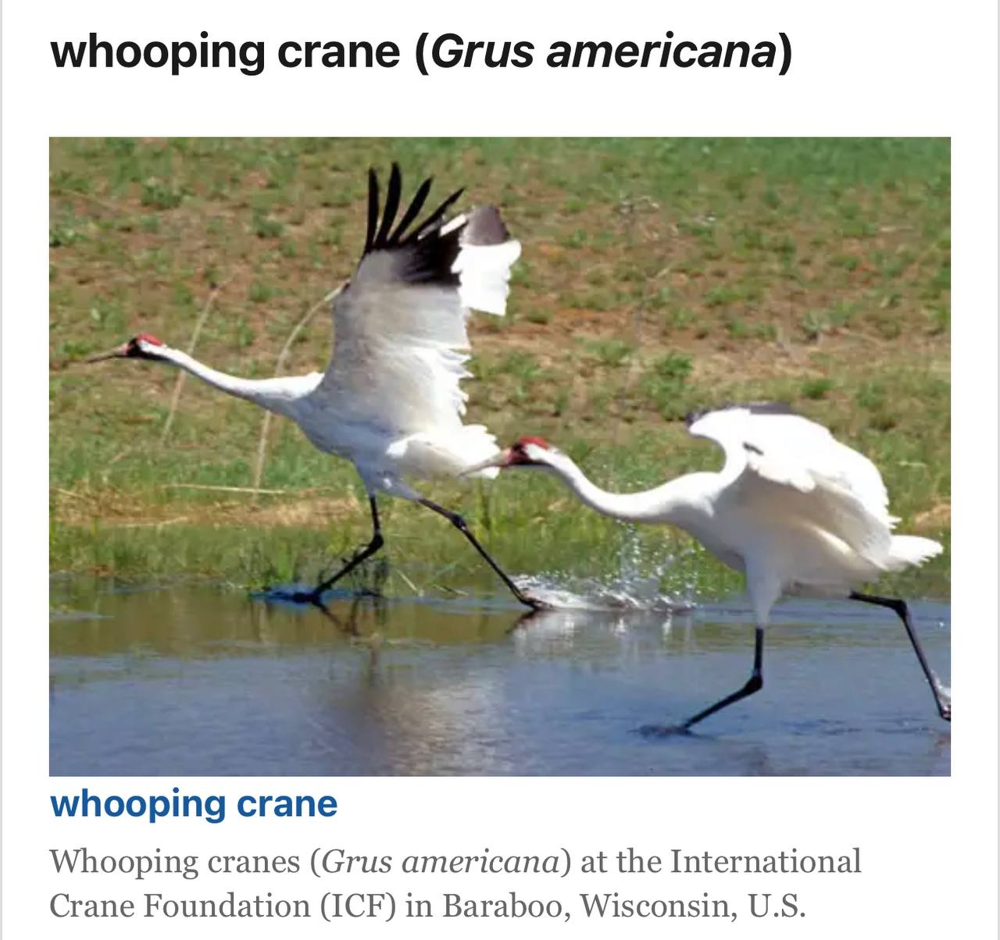
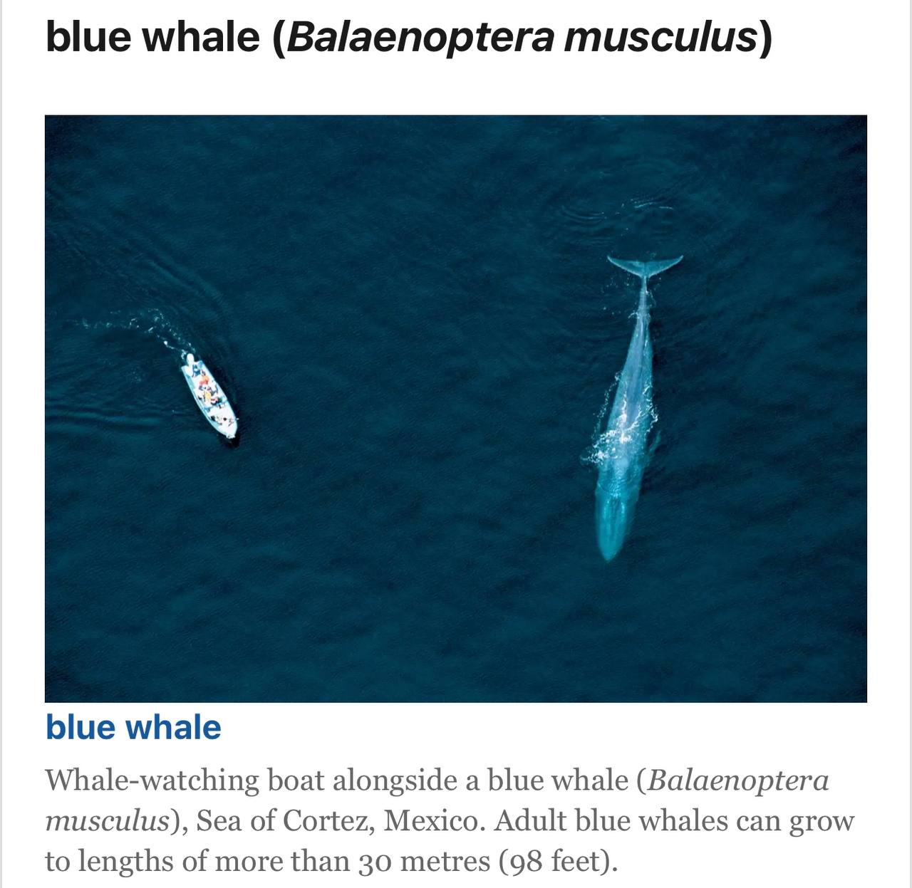
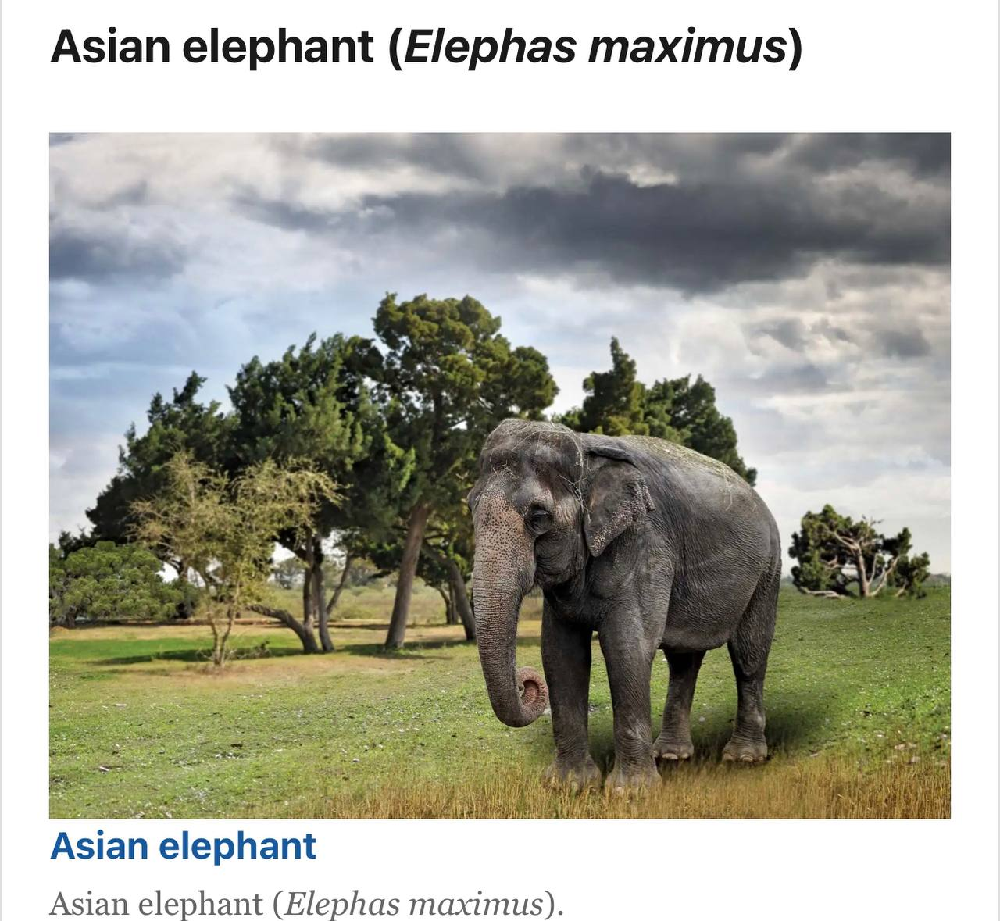
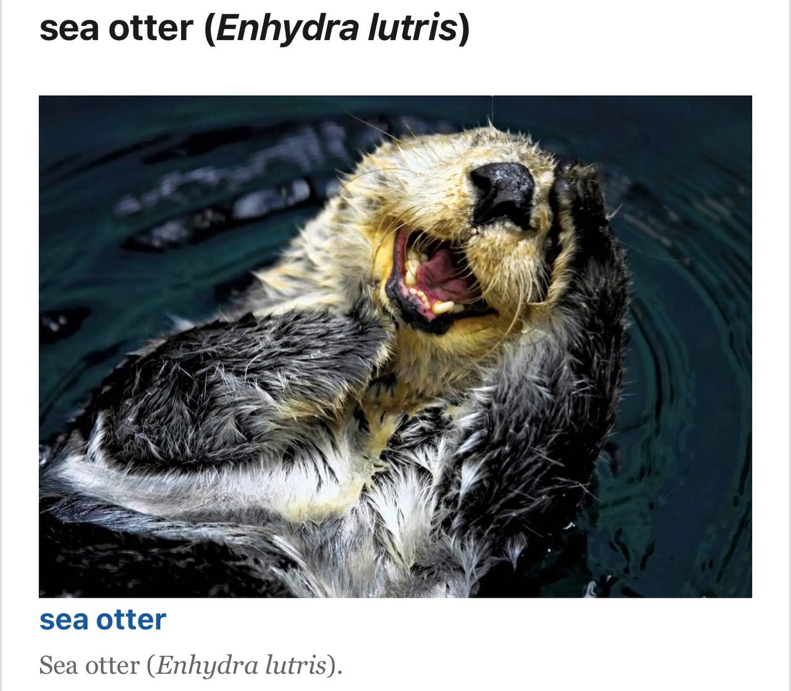
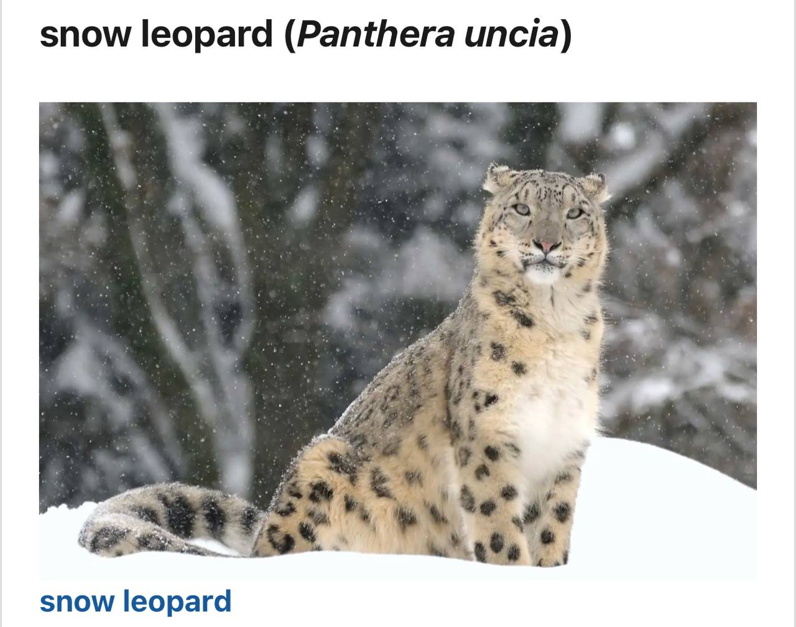
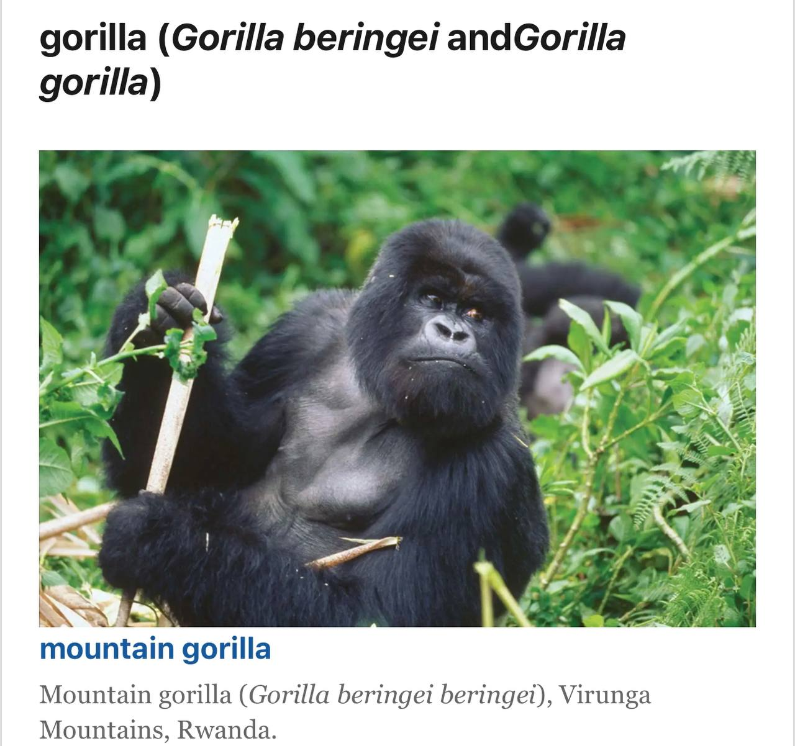
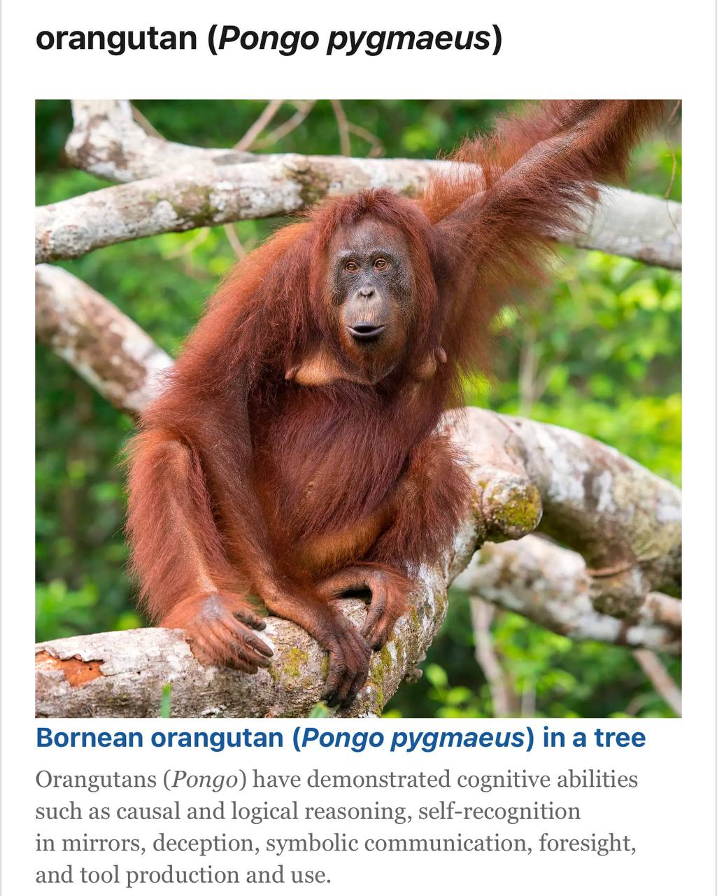

| ANIMALS | EXPLANATION |
|---|---|
|  | Less than 2,500 individuals make up the last remaining wild population found in China. Since the late 1980s, more strict habitat protections have been put in place and stopped. However, their situation is still precarious. Since their habitat is fragmented, they continue to be vulnerable and famine when significant areas of the bamboo they depend finish and dies. |
|  | The biggest threat to tigers is believed to be poaching, which is done for trophies and body parts that are used in Asian "medicine." There are probably fewer than 4,000 in the wild today. The consumption of endangered species, such as tigers, whose bones, penises, and other parts are superstitiously thought to have miraculous healing properties, was formally banned in China in 2014 |
|  | Only 29 whooping cranes existed in the wild in 1938, a population study was done. After three years, only 16 remained. Hunting and the shrinking of their marsh habitat had depleted the population, and it wasn't until the late 1960s that coordinated attempts to save the remaining birds started. Today, there are more than 400 birds, largely because of creative breeding methods. |
|  | The world's largest animals blue whales have fewer than 25,000. Blue whales, which have several subspecies, can be found in all of the world's oceans except the Arctic. Whaling in the twentieth century is thought to have reduced the current population by up to 90%. Commercial hunting of the species was eventually prohibited in 1966. |
|  | The IUCN estimates that the current population of Asian elephants, which live in 13 countries, is between 40,000 and 50,000. That figure could be much lower; some areas inhabited by the lumbering pachyderms are inaccessible due to terrain or political instability. India is home to more than half of the world's population |
|  | The luxurious waterproof coat that protects sea otters from the cold waters in which they live nearly drove them extinct. The species was nearly wiped out as a result of the commercial fur trade, with only 2,000 of an estimated 300,000 remaining by 1911. That same year, a global ban on commercial hunting was enacted. |
|  | Though it is called a leopard and certainly resembles a frosted version of those spotted residents of more equatorial regions, genetic analysis shows that the snow leopard is more closely related to the tiger. There are probably fewer than 6,500 left in the wild, though data is difficult to come by due to the species' preference for remote mountainous terrain and its elusive nature. China and Mongolia have the largest populations, with significant populations in India and Kyrgyzstan as well. |
|  | There are either two species of gorillas, the eastern (Gorilla beringei) and western (Gorilla gorilla), or three subspecies, the eastern lowland, western lowland, and mountain gorillas, depending on who you ask. Everyone agrees that all gorillas are endangered. There are most likely only about 220,000 left in the wild. |
|  | "Orangutan" is Malaysian for "forest person." Though they look more like melted Muppets than people, their sophisticated cognitive abilities are very human. They, like gorillas and chimps, have been observed using tools. According to a 2004 study, the number of orangutans on the Southeast Asian islands of Borneo and Sumatra is less than 60,000, owing in large part to logging and capture for the exotic pet trade. |